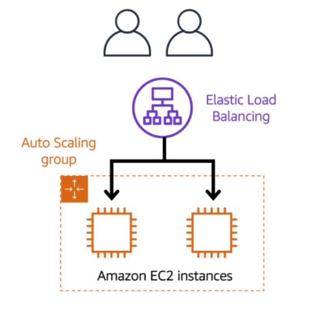
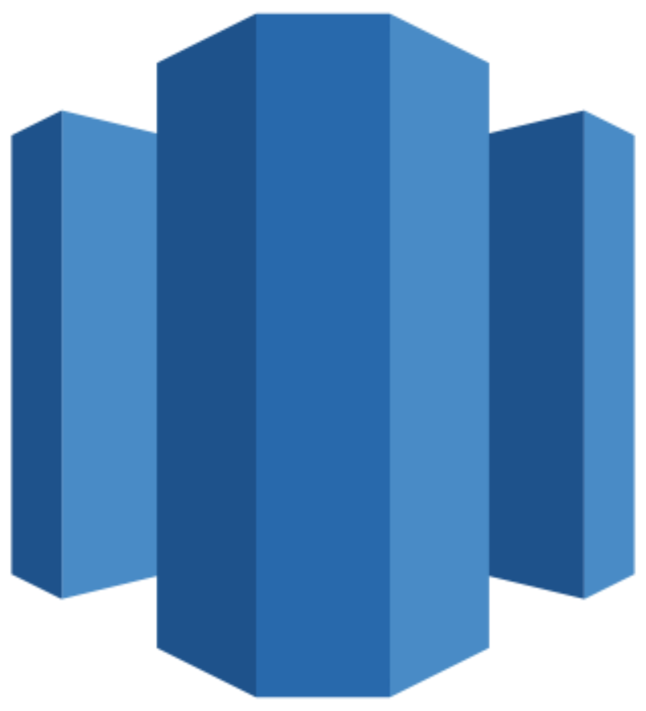

Intro to AWS
Lviv University
Cloud
Definition
Cloud computing is the on-demand delivery of computing resources through a cloud services platform via the internet with pay-as-you-go pricing.
Cloud
Service models
- Software as a Service (SaaS) The service vendor provides the user with a completed product that is run and managed by the service provider.
- Platform as a Service (PaaS) The service vendor provides the user with a set of API which can be used to build, test and deploy applications.
- Infrastructure as a Service (IaaS) The service vendor provides users access to computing resources such as servers, storage and networking.
Cloud
Cloud
Cloud
Cloud
Deployment models for cloud computing
- cloud-based
- on-premises
- hybrid
Cloud
Cloud-Based Deployment
- Run all parts of the application in the cloud.
- Migrate existing applications to the cloud.
- Design and build new applications in the cloud.
Note
Build using:
- low-level infrastructure
- higher-level services
Cloud
On-Premises Deployment
- Deploy resources by using virtualization and resource management tools.
- Increase resource utilization by using application management and virtualization technologies.
Note
Also known as a private cloud deployment.
In this model, resources are deployed on premises by using virtualization and resource management tools.
Cloud
Hybrid Deployment
- Connect cloud-based resources to on-premises infrastructure.
- Integrate cloud-based resources with legacy IT applications.
Note
In a hybrid deployment, cloud-based resources are connected to on-premises infrastructure.
Cloud
Benefits
- trade upfront expense for variable expense
- no data center maintenance
- flexible capacity
- easier to deploy
Cloud compute
Cloud compute
Amazon Elastic Compute Cloud (Amazon EC2)
Amazon Elastic Compute Cloud (Amazon EC2) provides secure, resizable compute capacity in the cloud as Amazon EC2 instances.
Instead of setting up physical hardware, one can:
- provision and launch an Amazon EC2 instance within minutes.
- stop using it when you have finished running a workload.
- pay only for the compute time you use when an instance is running, not when it is stopped or terminated.
Cloud compute
Steps
- Launch
- select type
- configure
- Connect
- Use
Cloud compute
Multi-tenancy
- When you spin up an EC2 instance, you aren’t necessarily taking an entire host to yourself.
- you are sharing the host with multiple other instances, otherwise known as virtual machines.
- Hypervisor running on the host machine is responsible for sharing the underlying physical resources between the virtual machines.
- one EC2 instance is not aware of any other EC2 instances also on that host.
Cloud compute
Amazon EC2 instance types
- General purpose instances provide a balance of compute, memory, and networking resources.
- Compute optimized instances are ideal for compute-bound applications that benefit from high-performance processors.
- Memory optimized instances are designed to deliver fast performance for workloads that process large datasets in memory.
- Accelerated computing instances use hardware accelerators, or coprocessors, to perform some functions more efficiently than is possible in software running on CPUs.
- Storage optimized instances are designed for workloads that require high, sequential read and write access to large datasets on local storage.
Cloud compute
Pricing
- on-demand: short-term, irregular workloads that cannot be interrupted.
- reserved: discounted on-demand, for predictable usage
- spot: for workloads with flexible start and end times, or that can withstand interruptions.
- dedicated: physical servers with Amazon EC2 instance capacity that is fully dedicated to your use.
Cloud compute
Scalability
Scalability involves beginning with only the resources you need and designing your architecture to automatically respond to changing demand by scaling out or in.
Amazon EC2 Auto Scaling enables you to automatically add or remove Amazon EC2 instances in response to changing application demand.
- Dynamic scaling responds to changing demand.
- Predictive scaling automatically schedules the right number of Amazon EC2 instances based on predicted demand.
Cloud compute
Elastic Load Balancing
Elastic Load Balancing (ELB) is the AWS service that automatically distributes incoming application traffic across multiple resources, such as Amazon EC2 instances. A load balancer acts as a single point of contact for all incoming web traffic to your Auto Scaling group.
- requests route to the load balancer first
- the requests spread across multiple resources that will handle them.
Cloud compute
Elastic Load Balancing

Cloud compute
Elastic Load Balancing
Cloud compute
Monolithic applications
Cloud compute
Microservices
Cloud compute
Messaging and Queuing
Basic idea: messages between components should be placed into a buffer.
- Tightly coupled: when applications communicate directly
- Loosely coupled: applications communicate indirectly, e.g. using message queue
AWS services:
- Simple Queue Service (SQS)
- Amazon Simple Notification Service (SNS).
Cloud compute
Amazon Simple Queue Service (Amazon SQS)
Amazon Simple Queue Service (Amazon SQS) is a message queuing service.
- In Amazon SQS, an application sends messages into a queue.
- A user or service retrieves a message from the queue, processes it, and then deletes it from the queue.
- Amazon SQS is a message queuing service, and is therefore not the best choice for publishing messages to subscribers.
Cloud compute
Amazon Simple Notification Service (Amazon SNS)
Amazon Simple Notification Service (Amazon SNS) is a publish/subscribe service.
- Using Amazon SNS topics, a publisher publishes messages to subscribers.
- Amazon SNS is similar to SQS in that it is used to send out messages to services, but it can also send out notifications to end users. It does this in a different way called a publish/subscribe or pub/sub model.
Cloud compute
EC2 computing
With EC2, in order to run an application, one needs to:
- Provision instances (virtual servers).
- Upload your code.
- Continue to manage the instances while your application is running.
Serverless computing
Code runs on servers, but provisioning/management is not user’s responsibility.
- you cannot actually see or access the underlying infrastructure or instances that are hosting your application.
- instead, all the management of the underlying environment from a provisioning, scaling, high availability, and maintenance perspective are taken care of.
Cloud compute
AWS Lambda
AWS Lambda is a service that lets you run code without needing to provision or manage servers.
It allows you to upload your code into what’s called a Lambda function. Configure a trigger and from there, the service waits for the trigger. When the trigger is detected, the code is automatically run in a managed environment.
Important
Lambda is designed to run code under 15 minutes so this isn’t for long running processes like deep learning. It’s more suited for quick processing like a web backend, handling requests or a backend expense report processing service where each invocation takes less than 15 minutes to complete.
Cloud compute
How AWS Lambda works
- You upload your code to Lambda.
- You set your code to trigger from an event source, such as AWS services, mobile applications, or HTTP endpoints.
- Lambda runs your code only when triggered.
- You pay only for the compute time that you use.

Cloud compute
Containers
AWS can run Docker containers through:
- Amazon Elastic Container Service (ECS)
- Amazon Elastic Kubernetes Service (EKS).
Cloud compute
Amazon Elastic Container Service (Amazon ECS)
Amazon Elastic Container Service (Amazon ECS) is a highly scalable, high-performance container management system that enables you to run and scale containerized applications on AWS.
Amazon Elastic Kubernetes Service (Amazon EKS)
Amazon Elastic Kubernetes Service (Amazon EKS) is a fully managed service that you can use to run Kubernetes on AWS. Kubernetes is open-source software that enables you to deploy and manage containerized applications at scale.
AWS Fargate
Both Amazon ECS and Amazon EKS can run on top of EC2. If you don’t want to manage EC2, you can use Fargate: a serverless compute engine for containers. It works with both Amazon ECS and Amazon EKS.
Cloud compute
Choice of Compute Service
- If you are trying to host traditional applications and want full access to the underlying operating system like Linux or Windows, you are going to want to use EC2.
- If you are looking to host short running functions, service-oriented or event driven applications and you don’t want to manage the underlying environment at all, look into the serverless AWS Lambda.
- If you are looking to run Docker container-based workloads on AWS, you can use ECS/EKS/Fargate
Storage
Storage
Instance stores
Term: block-level storage is a place to store files.
An instance store provides temporary block-level storage for an Amazon EC2 instance.
If you stop or terminate your EC2 instance, all data written to the instance store volume will be deleted. The reason for this, is that if you start your instance from a stop state, it’s likely that EC2 instance will start up on another host.
Storage
Amazon Elastic Block Store
Amazon Elastic Block Store (Amazon EBS) is a service that provides block-level storage volumes that you can use with Amazon EC2 instances. If you stop or terminate an Amazon EC2 instance, all the data on the attached EBS volume remains available. With EBS, you can create virtual hard drives that we call EBS volumes that you can attach to your EC2 instances.

Storage
Amazon EBS snapshots
An EBS snapshot is an incremental backup of EBS volume.
Storage
Object storage
Amazon Simple Storage Service (Amazon S3) is a service that provides object-level storage. Amazon S3 is a data store that allows you to store and retrieve an unlimited amount of data at any scale.
- Data is stored as objects
- instead of storing them in a file directory, data are stored in buckets
- Amazon S3 offers unlimited storage space.
- no delta updates
- The maximum file size for an object in Amazon S3 is 5 TB.
- each object consists of data, metadata, and a key.
Storage
S3 objects
- Data might be an image, video, text document, or any other type of file.
- Metadata contains information about what the data is, how it is used, the object size, and so on.
- An object’s key is its unique identifier.
Storage
Storage classes
- S3 Standard
- Designed for frequently accessed data
- Stores data in a minimum of three Availability Zones
- comes with 11 nines of durability. That means an object stored in S3 Standard has a 99.999999999 percentage probability that it will remain intact after a period of one year.
- S3 Standard-Infrequent Access (S3 Standard-IA)
- Ideal for infrequently accessed data
- Similar to S3 Standard but has a lower storage price and higher retrieval price
- S3 One Zone-Infrequent Access (S3 One Zone-IA)
- Stores data in a single Availability Zone
- Has a lower storage price than S3 Standard-IA
Storage
Storage classes
- S3 Intelligent-Tiering
- Ideal for data with unknown or changing access patterns
- Requires a small monthly monitoring and automation fee per object
- Amazon S3 monitors objects’ access patterns.
- S3 Glacier
- Low-cost storage designed for data archiving
- Able to retrieve objects within a few minutes to hours
- S3 Glacier Deep Archive
- Lowest-cost object storage class ideal for archiving
- Able to retrieve objects within 12 hours
Storage
Comparing Amazon EBS and Amazon S3
- backups: S3
- huge files continuously updated: EBS
Storage
RDS
Amazon Relational Database Service (Amazon RDS) is a service that enables you to run relational databases in the AWS Cloud.
Amazon RDS is available on six database engines, which optimize for memory, performance, or input/output (I/O). Supported database engines include:
- Amazon Aurora
- PostgreSQL
- MySQL
- MariaDB
- Oracle Database
- Microsoft SQL Server
Storage
Amazon DynamoDB

Amazon DynamoDB is a key-value database service.
- delivers single-digit millisecond performance at any scale.
- a non-relational, NoSQL database.
- With DynamoDB, you create tables
- Data in tables is organized into items, and items have attributes.
- serverless
Storage
Amazon Redshift

Amazon Redshift is a data warehousing service that you can use for big data analytics.
- ability to collect data from many sources
- data warehousing as a service.
- massively scalable (Redshift nodes in multiple petabyte sizes is very common)